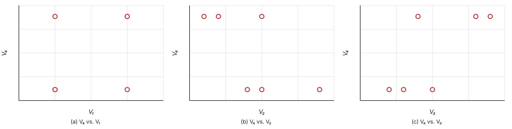
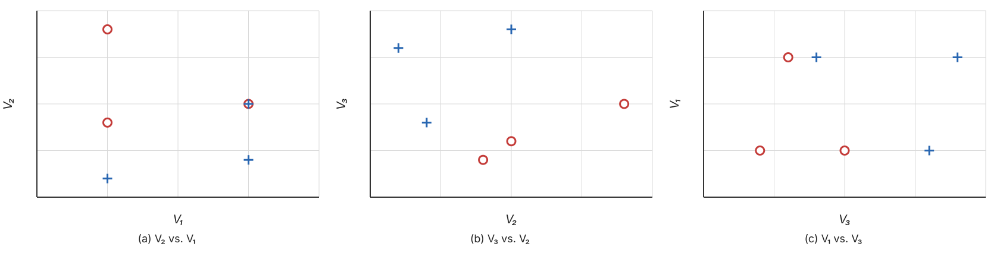
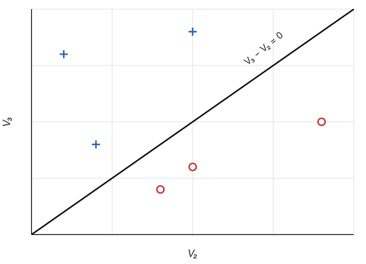
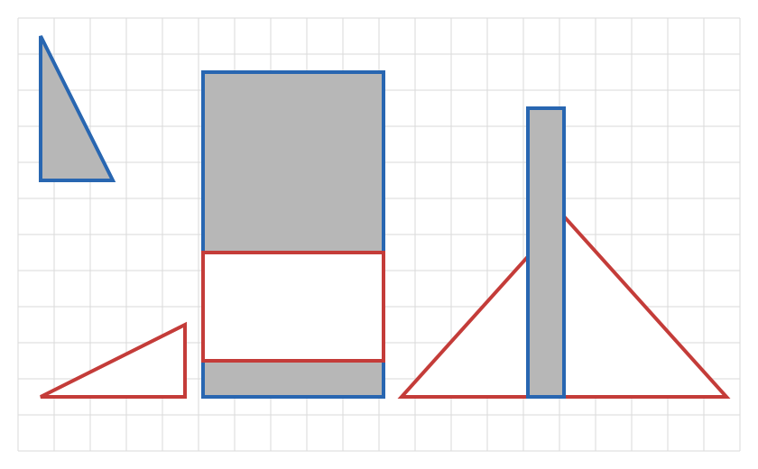
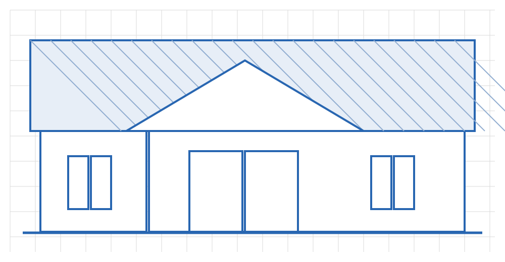

1 From Data to Information and Meaning
With great power comes great responsibility.
Uncle Ben, Spider-Man
We encounter data and information every day. We live in a world where information appears to be constantly generated and consumed. We have research disciplines where the subject of study is on information. Yet when it comes to the basic definition of what information is, there is hardly any agreement.
Information is ubiquitous and conveyed in all sorts of media. It can be communicated on news papers, radio, or television. It exists in books that can be read and touched, in records that can be played and listened to. Yet information is not the physical medium being used nor the symbols and signals being transmitted. It is a seemingly intangible concept of a tangible reality. With a conscious mind, information can be internalized into knowledge, which in turn gives rise to new ideas and, as it may go on, new information.
Information is power, in so many tangible ways.
The biological coding of DNS dictates the physical growth, development and functioning of living organisms. The very existence of mass dictates the curvature of space-time and the physics of moving objects. Is it not a manifestation of information itself?
Information appears to be so universal that a school of prominent physicists have proposed information to be the fundamental element of the universe, with matter and energy as its incidents. "Everything is information," as the late John A. Wheeler put it.
Will it turn out to be true that information is indeed the essence behind "everything," a reality more fundamental than matter and energy, or quantum and light? In other words, is the universe simply a manifestation of its inherent information? If this is the case, we can perhaps regard the natural world as a giant hologram projected from its information core.
In this view, everything we encounter originates from the fundamental reality of information. The pitches of sound we hear, the rays of light we observe, and the forces that push us together or pull us apart... all are signals of information from deep within. When we record the signals and events, they become our data. They are traces of the underlying information we are yet to discover.
And from here we embark on our quest for information, following the footprints of data with the vehicle of computing.
1.1 From Data to Meaning
Suppose we receive the following data:
| 011 0100 0010 0 100 0101 1001 1 011 1001 0101 0 |
| 011 0010 0100 1 100 0001 1000 1 100 0101 0011 0 ... .… .… . |
Clearly, the data arrive in the binary form but one has to find out what the numbers actually stand for. If metadata1 are provided, the values can be properly interpreted and used. Otherwise, one may examine the patterns in the data and identify potential structures.
For example, one may discover that number of digits between each pause (space) repeats in a 3-4-4-1 pattern. If we break each combination of 3-4-4-1 into a line and convert the bits into decimals, the data become:
| 3 | 4 | 2 | 0 |
|---|---|---|---|
| 4 | 5 | 9 | 1 |
| 3 | 9 | 5 | 0 |
| 3 | 2 | 4 | 1 |
| 4 | 1 | 8 | 1 |
| 4 | 5 | 3 | 0 |
| ... | .… | .… | . |
Now in Table 1.2, we are yet to find out what the data mean. There appear to be \(4\) columns for each row we received. The \(4^{th}\) column is binary, with \(0\) vs. \(1\) indicating a boolean answer for one way or the other. We suspect that values of the first \(3\) columns might have something to do with the \(4^{th}\).
When examining their relations, it is often helpful to use visualizations. We may start with a scatter plot for the \(4^{th}\) column vs. each of the first \(3\) columns, as shown in Figure 1.1.

Now that the scatter plots hardly reveal any obvious relation, we may start to look at the interplay of multiple variables. We may ask, for example, "is the boolean value of the \(4^{th}\) column in any way associated with the relation between the first two columns?" To answer this question, we may create a scatter plot of the \(1^{st}\) and \(2^{nd}\) columns while color-coding the \(4^{th}\). When we do the same for \(2^{nd}\) vs. \(3^{rd}\) and \(1^{st}\) vs. \(3^{rd}\) as well, we get Figure 1.2.

It appears the data are nicely separated in terms of \(4^{th}\) column values in Figure 1.2 (b), showing the scatter plot of the \(3^{rd}\) vs. \(2^{nd}\) column. When the value of the \(3^{rd}\) column is greater than the value of the \(2^{nd}\), it is \(1\) in the \(4^{th}\) column; otherwise, it gives \(0\). This can be written as:
\[ V_4 = \left\{ \begin{array}{l l} 1 & if\ V_3 > V_2 \\ 0 & otherwise \end{array} \right. \tag{1.1}\]
This appears to be the pattern so far and can be further verified when we receive more data. Ultimately, if this is consistent with the underlying relation in the data – as far as we can tell from sufficient data we can receive – we can claim to have discovered a pattern or new "knowledge", which is essentially what we have learned in the process of analyzing the data.
In the machine learning context, we refer to the result of learning, i.e. the new "knowledge", as the concept. Equation 1.1 is a rule-based approach to concept representation (descriptor). Sometimes, a (linear) equation may also be used to represent the result of learning. In this example, equation \(V_3 - V_2 = 0\) is the straight line that separates the \(0\) and \(1\) values of column \(4\), as shown in Figure 1.3.

Whether the concept representation is based on the rules in Equation 1.1 or the linear equation in Figure 1.3, it can be identified by computing and comparing values in the data. Normally such concept representation is discovered through training data and to be applied on testing data, where decisions or predictions will be made.
Continue with the corresponding practice activity to turn From Data to Meaning into a calculation, implementation, visualization, diagnostic, or interpretation task.
1.2 Concept Generalizability
The example shows that we can potentially identify a concept and gain new knowledge by crunching numbers in the data. This could be done without understanding what the data mean in context. It is important, however, to examine the representativeness of training data and the generalizability of concept representation thus learned in the application domain.
To give the above example some context, the data are in fact about a collection of shapes, each of which has a number of sides, a width, a height, and a code indicating whether the shape is standing or lying.
| # Sides | Width | Height | Standing? |
|---|---|---|---|
| 3 | 4 | 2 | 0 |
| 4 | 5 | 9 | 1 |
| 3 | 9 | 5 | 0 |
| 3 | 2 | 4 | 1 |
| 4 | 1 | 8 | 1 |
| 4 | 5 | 3 | 0 |
| ... | .… | .… | . |
Data in Table 1.3 represent the shapes shown in Figure 1.4. Intuitively, the concept of standing can be understood as describing a human-like object – when a person stands, her height is greater than the width; when one lies down, the horizontal measurement (width) becomes relatively greater.

It is in this context of human-like shapes that the concept of standing is injected into the data and can be discovered by mining. It is also in this context – again the assumption of human-like shapes – that the identified relation of width vs. height can be applied to related data for predictions, decision making, etc.
With related assumptions attached, the concept does not represent universal truth. The same notion of standing might be very different with a more complex shape or structure. In Figure 1.5, for example, the shape of a building may be flat in terms of its height-width ratio but we see it standing as an architecture.

It takes an in-depth analysis with proper evaluation and interpretation to assess the learned concept, its generalizability, and applicability. This cannot be accomplished by crunching the numbers alone. It requires human intelligence along with machine learning.
Continue with the corresponding practice activity to turn Concept Generalizability into a calculation, implementation, visualization, diagnostic, or interpretation task.
1.3 Final Observation
For the concept of standing, it turns out that the number of sides of a shape has no impact on the classification. Variables (features) as such can be safely removed for the analysis. As far as the specific concept goes, these variables are part of the noise in the data and can be identified through feature selection.
The example also shows that it is sometimes (often) insufficient to model a concept on individual variables. In the shapes data example, the concept of standing is a relation between the width and height. For now, it is a simple, linear function. Nonetheless, a more complex concept with messier real-world data may require a non-linear model.2 In the following chapters, we will be looking at approaches by which relations of various complexity can be discovered.
Ultimately, machine learning on massive data may help us identify patterns and relations that cannot be eye-spotted, which will then lead to new insight and meaning. And the gained knowledge, if understood properly, will hopefully result in better decision making and improved productivity.